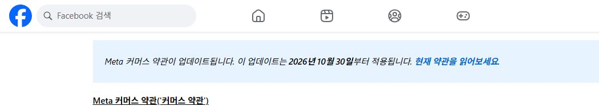

메타, 미국 영어 약관에서 ‘학습’ 문구를 뺐다
메타가 사업자 웹사이트의 자료를 AI 학습에 쓸 수 있다는 논란을 빚은 뒤, 새 상업용 약관의 미국 영어판에서 ‘학습’을 뜻하는 train 문구를 삭제했다는 후속 보도가 나왔다. 시행 예정일은 10월 30일이다. 웹사이트를 자동으로 수집하는 권한은 남아 있어, 문구 수정으로 논란이 모두 끝나지는 않았다. 10월 17일 후속 보도

이 소식은 페이스북이나 인스타그램에 올린 게시물만의 문제가 아니다. 사업자가 SNS 계정과 함께 운영하는 외부 홈페이지의 콘텐츠를 어디까지 가져갈 수 있느냐가 핵심이다. 블로그 글의 링크를 올리거나 자기 쇼핑몰을 홍보하는 작은 사업자에게도 관심이 갈 수밖에 없는 주제다.
다만 개인 계정 이용자 모두의 모든 자료가 이미 학습됐다고 말할 근거는 없다. 이 기사는 새 약관의 표현과 그에 대한 논란을 다룬다. 실제로 어떤 웹사이트에서 어떤 자료가 수집·학습됐는지는 별도의 사실 확인이 필요하다.
문제는 외부 홈페이지까지 넓어진 표현이었다
10월 15일 Nieman Lab은 새 약관에 사업자 제품·서비스와 연결된 웹사이트를 자동 수집하고, 그 내용을 메타 제품의 개발·개선·연구·학습 등에 사용할 수 있다는 표현이 들어 있다고 보도했다. 매체가 원문을 보여주고 법률 전문가 세 명에게 검토를 요청한 기사다. 당시 문구와 법률 전문가 해석
웹 수집, 또는 크롤링은 프로그램이 웹페이지를 찾아 내용을 읽고 모으는 작업이다. 검색 결과를 만들거나 링크의 제목과 그림을 보여줄 때도 사용된다. 쟁점은 이 기술 자체보다, 모은 자료를 어떤 목적으로 사용할 권한을 약관이 주느냐에 있다.
보도에 등장한 법률 전문가들은 기존 문구를 넓게 읽으면 언론사의 외부 기사도 AI 학습에 쓸 수 있다고 주장할 여지가 있다고 봤다. 이는 약관에 대한 전문가 해석이다. 법원이 이 조항의 효력을 확정했다는 판결 보도와는 구분해야 한다.

논란 뒤 미국 영어판이 달라졌다
10월 17일 직접 문구를 비교한 Déclic은 미국 영어판에서 train이 빠지고, 수집 목적이 광고·사업자용 제품의 제공·개선·연구와 메타 제품의 무결성·보안 유지 쪽으로 바뀌었다고 보도했다. 웹페이지를 주기적으로 읽거나 시험용 계정을 만들 수 있다는 표현은 남아 있다고 설명했다. 수정 전후 비교 보도
여기서 무결성은 서비스와 데이터가 훼손되거나 부정하게 사용되지 않도록 유지한다는 뜻이다. 새 문구의 용도가 전보다 구체적으로 좁혀졌다는 점과, 외부 자료 수집을 허용하는 기본 문장이 남았다는 점을 함께 읽어야 한다.
같은 시점에 모든 언어판이 동일하게 바뀐 것도 아니었다. Déclic과 Elsop은 미국 영어판을 수정된 문구로 확인했지만, 다른 언어판에는 이전 문구가 남아 있었다고 각각 기록했다. 확인 시각과 언어에 따라 보이는 약관이 달라질 수 있다는 뜻이다. 언어판 차이를 비교한 기록
10월 18일 편집부가 공식 약관 미리보기를 브라우저로 열었을 때 표시된 한국어판에는 수집한 콘텐츠의 이용 목적에 아직 ‘교육’이 포함돼 있었다. 시행일은 10월 30일로 표시됐다. 미국 영어판 수정이 한국어판에도 똑같이 반영됐다고 안내할 수 없는 이유다. 이 확인은 화면의 문구에 관한 것으로, 언어판 사이의 법적 효력까지 확정한 판단은 아니다. Meta 공식 약관 미리보기
메타의 설명과 언론사의 우려는 다르다
메타는 기존 여러 약관에 흩어져 있던 수집 관련 표현을 모은 것이며, 웹 수집 방식은 달라지지 않는다고 설명했다. 후속 보도에 따르면 회사는 해당 조항이 광고와 사업자용 제품에 관한 내용이었다고 해명했다. 콘텐츠 소유자가 robots.txt로 수집 선호를 표시할 수 있다는 입장도 유지했다.
미국 언론사 단체 News/Media Alliance는 수정 후에도 학습을 명시적으로 금지한 것은 아니라고 지적했다. 광고 제품에도 AI가 쓰일 수 있어, 목적을 좁힌 문장이 구체적으로 어디까지 허용하는지는 여전히 문제라는 입장이다. 이 대목은 메타의 발표가 아니라 업계 단체의 반론이다. 회사 설명과 업계 반론
그래서 두 극단 모두 조심해야 한다. ‘메타가 이제 모든 글을 마음대로 가져간다’는 단정도, ‘단어 하나가 빠졌으니 AI 학습은 완전히 금지됐다’는 단정도 현재 공개 자료보다 앞서간다. 실제 적용은 최종 약관의 범위와 서비스 조건, 법적 판단을 함께 봐야 한다.
robots.txt는 출입문 잠금장치가 아니다
robots.txt는 사이트 운영자가 자동 수집 프로그램에 방문해도 되는 경로를 알려주는 공개 파일이다. 기술 표준 RFC 9309는 이것이 유효한 보안 조치를 대신하지 못한다고 명시한다. 비밀번호가 필요한 자료는 별도의 접근 통제로 보호해야 한다. robots.txt 기술 표준
이 차이는 계약과 기술 설정을 구분하는 데도 도움이 된다. 파일에 ‘이 경로는 읽지 말라’고 적는 일, 서버가 실제로 접속을 막는 일, 약관에서 자료 이용을 허용하는 일은 각각 다른 층위다. 한 가지 설정으로 세 문제가 동시에 해결된다고 설명하면 운영자가 잘못된 안심을 얻을 수 있다.
또 수집 프로그램의 목적이 모두 같지는 않다. 어떤 접근은 링크 미리보기를 만들기 위한 것이고, 다른 접근은 별도의 데이터 수집일 수 있다. 회사 이름이 같다는 이유로 모든 접속을 한꺼번에 차단하기 전에는, 자신이 쓰는 공유 기능에 어떤 영향이 생기는지 확인할 필요가 있다. 이 글에서는 사이트 설정을 변경하거나 차단 규칙을 실행하지 않았다.
홈페이지 운영자가 지금 확인할 일
우선 자기 계정에 표시된 변경 안내에서 약관 이름, 언어, 시행일을 기록하면 된다. 같은 ‘메타 약관’이라도 상업용 약관과 광고·카탈로그 등 추가 약관은 다를 수 있다. 회사나 고객의 콘텐츠를 다루는 계정이라면 담당자가 혼자 동의 여부를 결정하기보다 홈페이지 운영 책임자와 안내를 함께 보는 편이 낫다.
그다음은 외부 홈페이지에 어떤 자료가 공개돼 있는지 구분하는 일이다. 누구나 읽는 소개 글과 로그인한 고객만 보는 자료를 같은 방식으로 관리할 수는 없다. 구체적인 계약상 권리나 규제 적용은 사업 위치와 콘텐츠 권리에 따라 달라지므로, 중요한 경우에는 해당 관할의 전문가에게 확인할 사안이다.
이번 소식에서 달라진 사실은 미국 영어 약관의 문구 수정이다. 앞으로 볼 핵심은 실제로 적용될 최종 문장이 어떤 수집과 이용을 허용하는지다. SNS에 링크를 올리는 창작자에게도 플랫폼 안의 게시물과 플랫폼 밖의 원본 콘텐츠를 함께 관리할 필요가 커졌다.
출처와 더 읽을 자료
- Nieman Lab 원보도, 10월15일
- The Next Web 수정 후속 및 회사·업계 반론, 10월17일
- Déclic 미국 영어판 직접 비교
- Elsop 언어판 비교
- 공식 새 상업용 약관(이번 조회 로그인 전환)
- RFC9309 보안상의 한계
- Meta 공식 커머스 약관 미리보기(한국어 화면 직접 확인)
대표 이미지는 제품명과 기사의 핵심을 편집부가 배치한 설명용 표지이며 실제 제품 화면이 아니다. 본문의 원본 화면·영상은 각 자료 아래에 출처와 제공 주체를 표시했다. 직접 실습하지 않은 회사 시연을 편집부의 실행 결과로 표시하지 않았다.